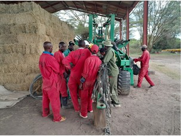

Verde-Scope Africa Limited, previously registered as Smart Consulting Limited, is a multidisciplinary environmental and development consultancy. We specialise in environmental compliance, climate change, health and safety audits, natural resource management, research, monitoring and evaluation, GIS, spatial planning and socio-economic development.
Established to bridge the gap between science, policy and development practice, we work with governments, development partners, NGOs, UN agencies, research institutions, the private sector and local communities to promote sustainable development, climate resilience, environmental stewardship and inclusive economic growth.

To become Africa's leading environmental and sustainable development consultancy delivering innovative solutions for resilient ecosystems, thriving communities and sustainable economies.
To provide professional consultancy services through scientific research, innovative technologies, environmental stewardship and strategic partnerships that promote sustainable development and climate resilience across Africa.
To provide innovative, science-based consultancy services that promote environmental sustainability, climate resilience and sustainable development through research, technology and professional expertise.
A selection from more than 80 assignments for county and national government, development partners, financial institutions and the private sector.
| Assignment | Client / Funded by | Location | Year | Type |
|---|
Registered with the National Environment Management Authority, with NEMA-registered Lead Experts on the team.
Member of the Kenya Rainwater Association, supporting rainwater harvesting and water security.